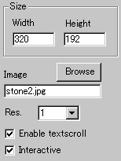
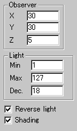
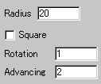
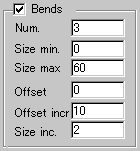

|
This applet visualises two types of animated tunnels,
cylindrical or parallel, in realtime. A cylindrical tunnel can have
as many bends as you want and produce rather interesting effect.
A parallel tunnel on the other hand somewhat reminds me of the mysterious
scene of "2001: a space odyssey". It produces sonic-moving
two parallel planes. It's a great visual effect!
[For more technical
information about the available parameters, click here.]
Most parameters are self-explanatory and you can
always see brief description of each parameter by moving the mouse
pointer over the wizard.
 |
First, decide the applet size and the
resolution, which enlarges the internally calculated
image and works as a zooming factor. Set it at 1, if you want
the best result.
Second, set an image for texture mapping of
the tunnel surface.
|
|
Then you decide if textscroll function is
enabled by checking "Enable textscroll" box.
You can also check "Interactive mode"
box, if you would like the light source controlled by the
mouse pointer.
|
 |
Now you set a camera position at "Observer"(x,
y, z).
Light is defined by the "Max"
and "Min" intensity and the descending rate
"Dec.".
Two more options concerning light effect.
The first one is the shading enabler. With this parameter
enabled, the vanishing point and its surrounding area are
darkened, and produce realistic looking of a tunnel.
|
The second option is "Reverse light".
This inverts the shading. So, if you don't enable shading effect,
this parameter changes nothing.
 |
Next, you set the "Radius"
of the tunnel. This in fact changes the size of the vanishing
area, regardless your choice of tunnels is cylindrical or
parallel.
|
|
With "Square" parameter checked,
the tunnel becomes parallel, whereas the default tunnel is
cylindrical.
You can control rotation speed and
advancing speed too.
|
 |
Finally, bends controls. These values have no
effect if your choice of tunnel is parallel one. Set the number
of bends, minimum and maximum size of bends and bends size increment
at "Num", "Size min.", "Size
max." and "Size inc." respectively.
|
| The bends increment value together
with "Offset" and "Offset increment"
values control the movement of the tunnel. You can produce breathing
effect by proper setting. |
Proceed to the textscroll
menu if you have checked the textscroll box; otherwise go to
the expert menu.
|